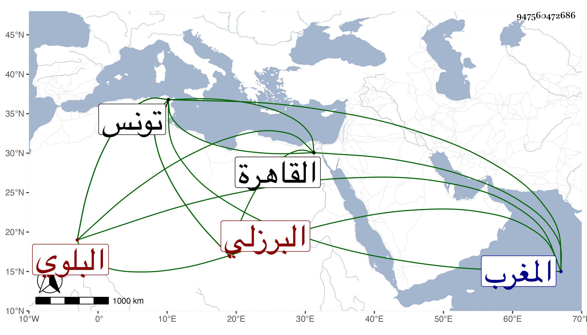

0902Sakhawi.DawLamic.ITO20230111-ara1.EIS1600.947560472686
Biography ID: 947560472686
429
أبو القسم بن أحمد بن محمد وقال بعضهم أبو القسم بن محمد بن اسماعيل البلوي البرزلي نزيل تونس وأحد أئمة المالكية ببلاد المغرب وصاحب الفتاوى المتداولة وهي في مجلدين قدم القاهرة حاجا في سنة ثمانمائة وأجاز لشيخنا بل أخذ عنه غير واحد ممن لقيناه كأحمد بن يونس وأرخ بعضهم وفاته بتونس في سنة أربع وأربعين وبعضهم في التي قبلها عن مائة وثلاث سنين وحينئذ فهو آخر من في القسم الأول من معجم شيخنا وأما آخرهم مطلقا فالبرهان الباعوني وكان البرزلي موصوفا بشيخ الإسلام .
